WebGL for Baby Brains:
Neuroimaging in the Browser


Fetal-Neonatal Neuroimaging and Developmental Science Center
http://fnndsc.github.com
- .. or short: FNNDSC
- Interdisciplinary research group
- Physicians, Psychologists, Physicists, Bio-Engineers..
- Director: P. Ellen Grant, MD

http://fnndsc.github.com
Loading...
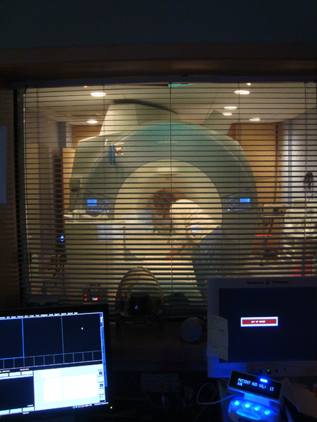
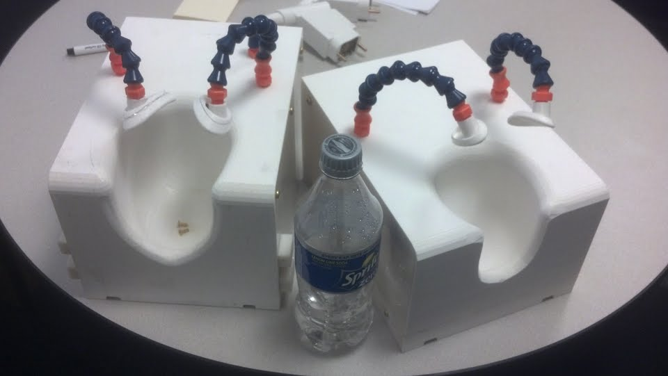
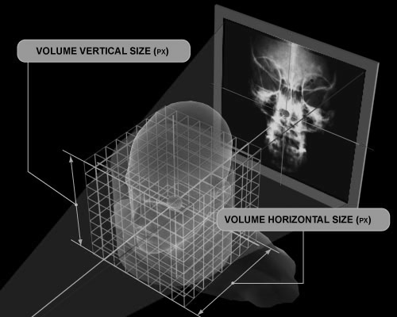
Loading...
Manual or Automatic Segmentation
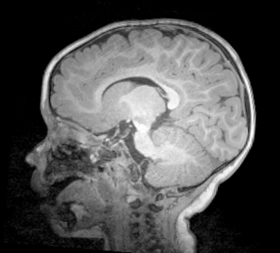
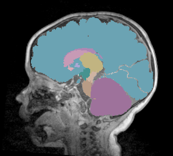
Loading...
Diffusion Imaging
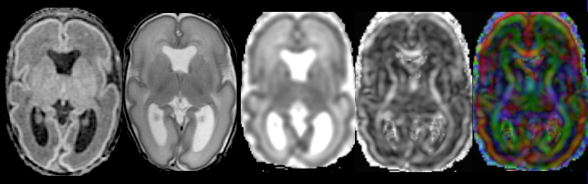
Loading...
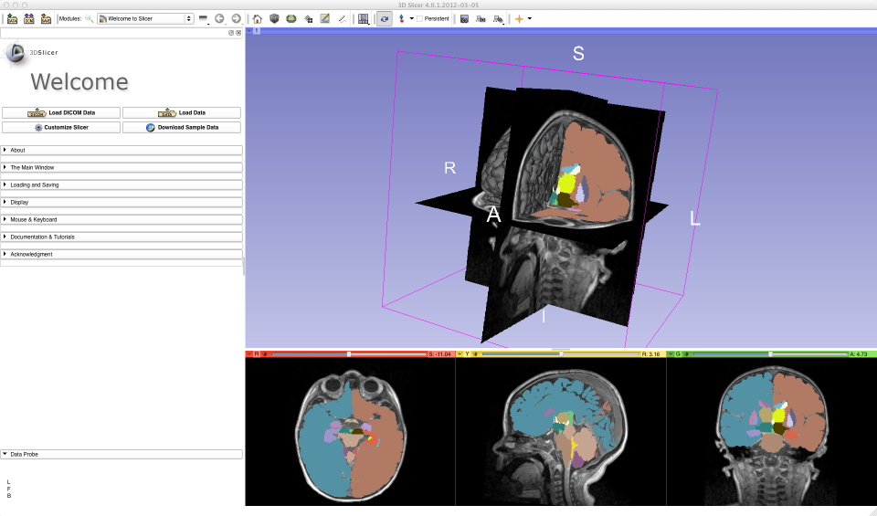
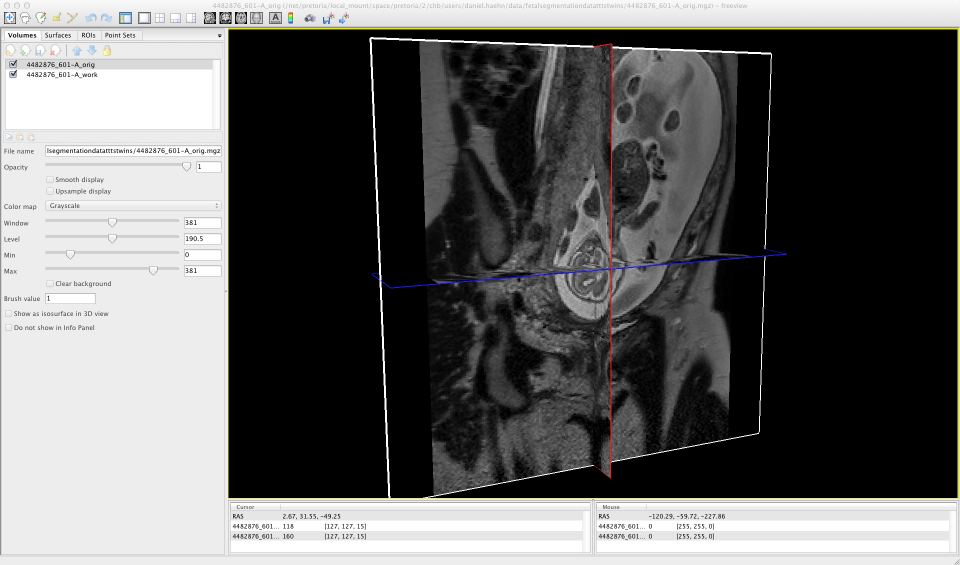
 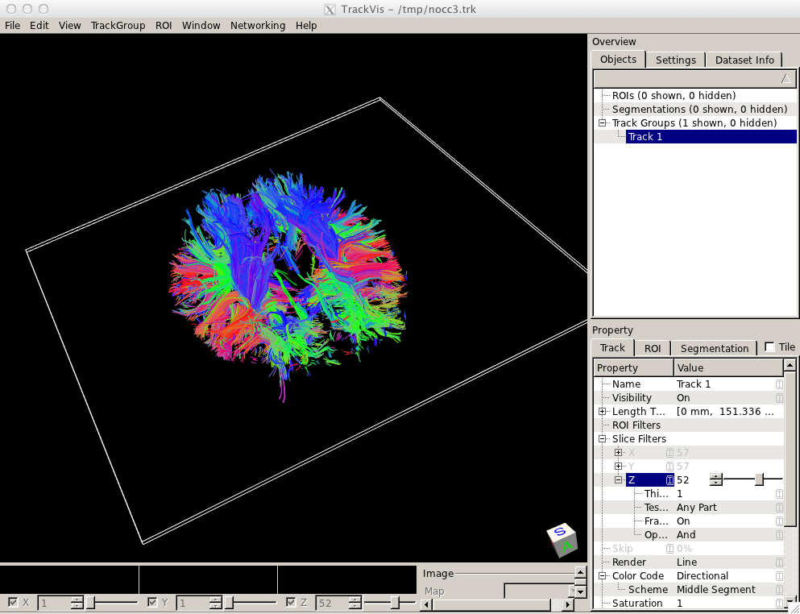
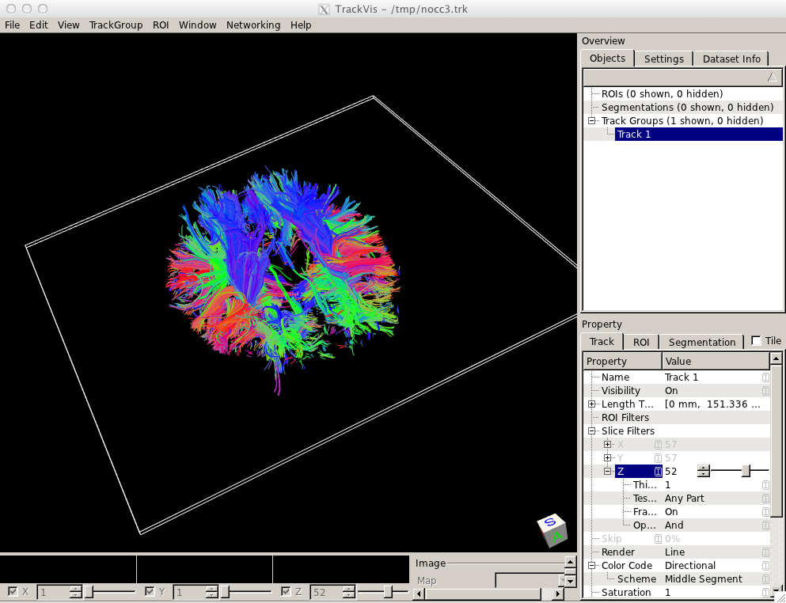
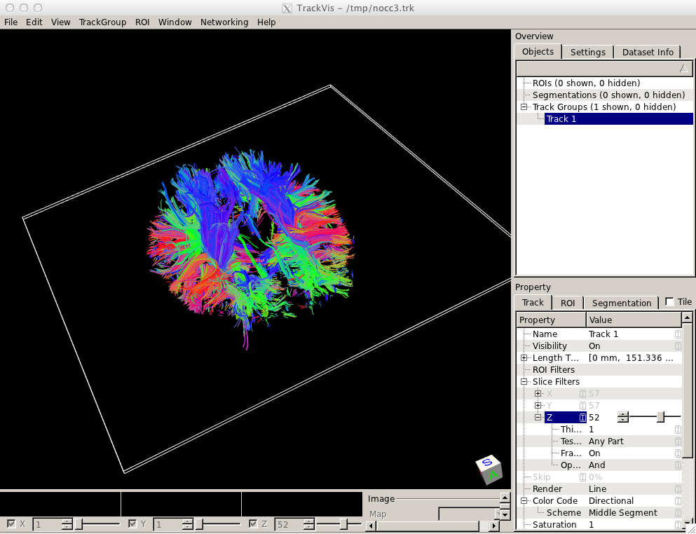
How to bring it to the web?
- Many WebGL frameworks exist but the learning curve is rather steep
- Researchers don't want to deal with Computer Graphics methodologies ..
- .. if they code, then only Matlab
The X Toolkit (XTK)
- Simple Visualization API
- Geared towards Scientific Visualization
- Support for various common file formats (.stl, .vtk, .trk, .nrrd, .fsm)
- Focus on Software Development Process (building+testing)
- Open source, fully unrestricted
Loading...
The Code
renderer = new X.renderer('r');
renderer.init();
// load a .NRRD file to the X.volume
// this works with gzip/gz/raw encoded NRRD files
var volume = new X.volume();
volume.load('data/10mo.nrrd');
// .. add it
renderer.add(volume);
// showtime
renderer.render();
Loading...
// create a new renderer
r5 = new X.renderer('r5');
r5.init();
// load a .vtk file
var model = new X.object();
model.load('data/Model_42_42.vtk');
model.setColor(0.7,0.7,0);
// .. add it
r5.add(model);
// and showtime!
r5.render();
Loading...
The Code
// create a new renderer
r1 = new X.renderer('r1');
r1.init();
// load a .trk file
fibers = new X.object();
fibers.load('data/cc_tracks.trk');
// add the object
r1.add(fibers);
// .. and render it
r1.render();
Loading...
 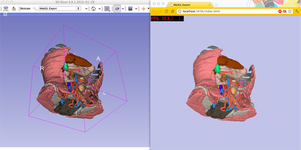
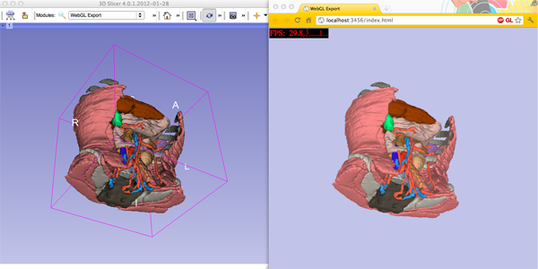

Google Closure Library
- dependency mechanism
- great event system
- easy object inheritance
- unit tests
- code check
- advanced compilation (super minified code)
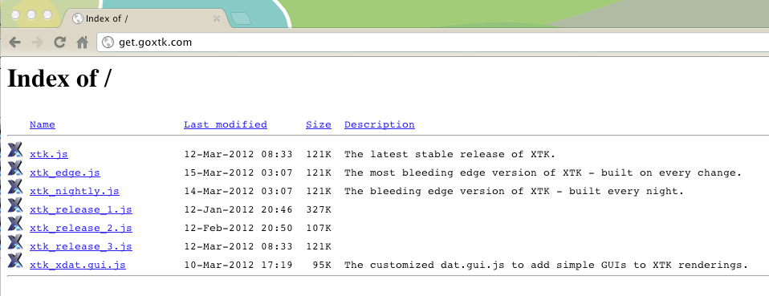
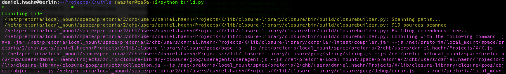
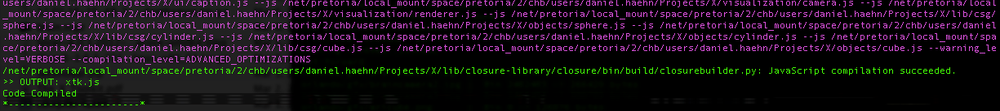
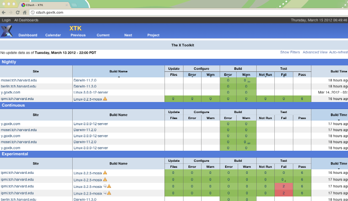

Challenges: File I/O
- data can be huge (~100 MB)
- different coordinate systems (RAS, LPS..)
- some require partial or full unzipping
- JXG's unzip library works well but is slow
Challenges: Transparency/Blending
- depth ordering required
- implemented object based depth ordering
- performance is good but artifacts appear
- depth peeling?
- other suggestions?
Challenges: Performance
- optimized loops
- Fast Duffs Device
- internally only object property access without validation
- caching, hash maps
Demos
Thank you!